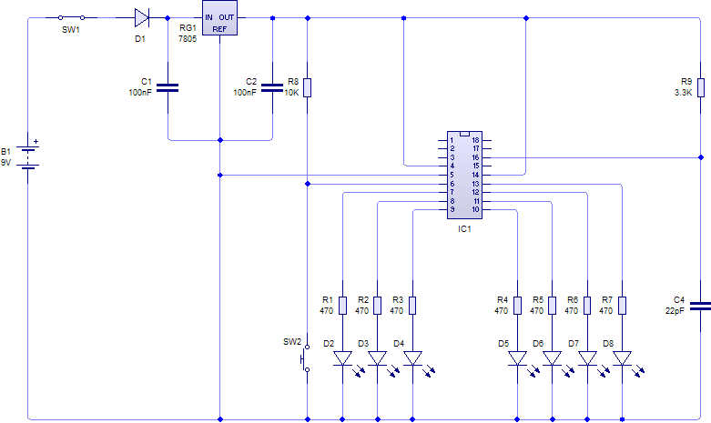

My first simple PIC design was for an electronic dice. The circuit was pretty simple, basically a just a set of seven LEDs driven from output pins driven from PORTB of a 16F628 through load resistors. A switch connected to RB0 triggers the rolling and the device is clocked by an RC oscillator. Click the image for a larger picture.
Unfortunately I can no longer find the code for this. My home machine suffered a disk crash and this was one of the casualties.
The random roll of the dice was based on the time between button presses. While the code was waiting for a button press it incremented a counter from 1 upto 6 and repeatedly. As this increment is happening thousands of times a second its impossible for a user to time presses to get a predicable outcome.
If I was designing this again I would do a few things differently. For starters I'd use a smaller device with a built in oscillator like the 12F629, possibly even a baseline chip like a 12F508. Also you don't need individual lines to each LED to draw dice face patterns. You can control the seven LEDs with just four signals. Also I'd try to eliminate the pull up on the switch input by using a pin with an internal weak pull up.
|
|
Contents | Next >> |
© Copyright 2009 Andrew John Jacobs. All rights reserved.
All trademarks and service marks are the properties of their respective owners.